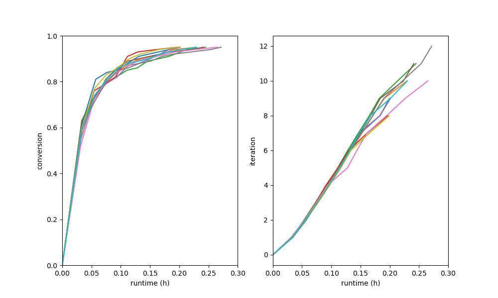
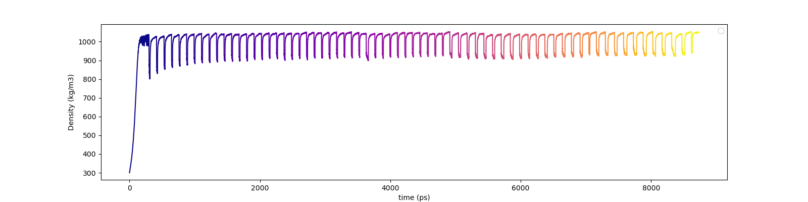

Running the Build¶
Now, in our working directory my_dgeba_pacm_build, we are ready to launch HTPolyNet:
$ cd my_dgeba_pacm_build
$ ls
DGE-PAC.yaml lib/
$ htpolynet run DGE-PAC.yaml -lib lib -log my_build.log --loglevel debug &
[1]
$ ls
DGE-PAC.yaml my_build.log lib/ proj-0/
$
HTPolyNet is instructed here to use the local ./lib/ as the molecule library; not including a value for -lib forces HTPolyNet to use the system library in the Library subpackage, and if you are making new molecules, they won’t be there. It is also instructed to write logging messages to my_build.log at the debug (most informative) level. The build can take several hours, so we are running it in the background. All the action is happening in proj-0 (and of course being reportedon in my_build.log), so let’s look in there.
Parameterization results¶
The first major block of calculations involves parameterizing all required molecular templates. So after a few minutes, we can inspect the parameterization results while the build continues:
$ cd proj-0
$ ls
molecules/ plots/ systems/
$ cd molecules/parameterized
$ ls DGE*.gro
DGEC-1.gro DGEC.gro DGE.gro DGE-SC-0-1.gro DGE-SC-1-0.gro DGE-SC-1-1.gro
$
What are we seeing here? These are the gro files generated by antechamber-parmchk2-tleap-parmed processing for the original DGEBA molecule in DGE.mol2, the oxirane-regenerated molecules DGEC (C1 bonds to O1) and DGEC-1 (C2 bonds to O2), and the three stereoisomers of the original DGEBA structure, called DGE-SC-0-1.gro etc. Notice that DGEC was the product in the explicit Oxirane-generation reaction dictionary; DGEC-1 is generated by the symmetry-equivalent reaction. Each of DGEC-1.gro, DGEC.gro, and DGE.gro also have companion mol2, top, itp, and sea files. The mol2’s are generated by antechamber and can be considered “intermediates” in the parameterization process. The original input mol2 files in the lib/molecules/inputs/ directory remain untouched. The top and itp files are Gromacs-specific topology files, of course. The sea files are atom-indexed listings of symmetry-set indices; most are -1 but atoms identified as belonging to the same symmetry sets are given unique set-specific values for this attribute. The stereoisomer gro files don’t need their own topology files. But there is a lot more in this directory:
$ ls PAC*gro
PACDGE-1.gro PACDGE2-1.gro PACDGE2-2.gro PACDGE2-3.gro PACDGE2-4.gro
PACDGE2-5.gro PACDGE2-6.gro PACDGE2-7.gro PACDGE-2.gro PACDGE2.gro
PACDGE-3.gro PACDGE.gro PAC.gro PAC-SC-0-1.gro PAC-SC-1-0.gro
PAC-SC-1-1.gro
$
First, note the gro files for PAC and its three stereoisomers. You can also see gro files for PACDGE, PACDGE-1, PACDGE-2, and PACDGE-3; PACDGE is the product of the explicit Primary-to-seconary-amine reaction dictionary, but what are these other three? These are the results of so-called “symmetry-expansion” of the original reaction based on the symmetry-equivalent atom declaraions. The first, PACDGE, results from N1 of PACM bonding to C1 of DGEBA. Since N1 is symmetric to N2 and C1 to C2, then the other three products are the result of N1-C2 (PACDGE-1), N2-C1 (PACDGE-2), and N2-C2 (PACDGE-3) bonds, respectively. These are automatically enumerated by HTPolyNet because of the symmetry declarations.
You also see a gro file for PACDGE2, and then for seven other symmetry partners PACDGE2-1 to PACDGE2-7. Why are there eight distinct tertiary amine products? The baseline product PACDGE2 is formed by reacting the N1 of PACDGE to the C1 of DGE, but remember that PACDGE is formed by the reaction of N1 of PAC and C1 of a different DGE. So the “sequence” of the product is PAC - DGE - DGE and each has a reactive atom in a symmetry set of size two; three slots with two possibilities in each is 23 = 8 realizations. Each of these also have their own companion mol2, top, itp, and sea files.
Liquid generation and densification¶
After a few more minutes, when the densification MD simulation has finished, let’s back out of the molecules/parameterized/ subdirectory and drop into systems/init/:
$ cd ../../systems/init
$ ls -1
DGE.gro
DGE-SC-0-1.gro
DGE-SC-1-0.gro
DGE-SC-1-1.gro
gmx.in
init.gro
init.grx
init-minimized.edr
init-minimized.gro
init-minimized.log
init-minimized.tpr
init-minimized.trr
init.top
liquid-densify-npt.mdp
mdout.mdp
minimize.mdp
npt-1.cpt
npt-1-density.xvg
npt-1.edr
npt-1.gro
npt-1.log
npt-1-out.xvg
npt-1.tpr
npt-1.trr
PAC.gro
PAC-SC-0-1.gro
PAC-SC-1-0.gro
PAC-SC-1-1.gro
$
The PAC and DGE gro files are used by gmx insert-molecules to build the initial coordinates of the low-density system, which appear in init.gro. HTPolyNet built the initial topology init.top using the template topologies, and init.grx (a “Gromacs-extended” coordinate file) contains some additional atomic attributes HTPolyNet needs. The mdp file minimize.mdp is “checked-out” from the system library and combined with init.top and init.gro via gmx grompp to build the mdrun input init-minimized.tpr. The results of that minimization are all the init-minimized files. Densification is governed by the liquid-densify-npt.mdp file, also checked-out from the system library. The densification results are all in the npt-1 files. The set init.top, init.grx, and npt-1.gro together constitute the “densified” state of the liquid system, and these are what initiates the CURE iterations to follow.
However, first a little detour: let’s go up out of systems/init and into plots/:
$ cd ../../plots
$ ls
init-density.png
HTPolyNet automatically generates a plot of density vs. time for the densification simulation:

We can see that we’ve successfully arrived at the liquid-like density of about 1,000 kg/m3.
The first CURE iteration¶
The next major part of the build is the first CURE iteration, which is the most expensive because the pair searching is most demanding when the number of reactive atoms is maximal. So let’s back out of plots and drop into systems/iter-1. For a long time (maybe an hour or so), all you will see is:
$ cd ../systems/iter-1
$ ls
linkcell-0.50.grx
That is an auxiliary file storing a link-cell index for each relevant atom (HTPolyNet uses a link-cell algorithm to perform the bond searching). However, once the bond search is complete and any dragging or relaxation is done, we’ll see a large number of files. They can be divided into five “phases” for each CURE iteration:
Bond search
Dragging
Topology update
Relaxation
Equilibration
Names of files corresponding to phases 0-4 all begin with their respective digits. Names of files that do not begin with a digit are “auxiliary”. Let’s consider the files in the seven states.
Bondsearch files¶
Files associated with the bondsearch begin with 0:
$ ls -1 0-*
0-bondsearch-bonds.csv
0-bondsearch.gro
0-bondsearch.grx
0-bondsearch-input.gro
0-bondsearch.top
The gro and top files are sufficient Gromacs input. The grx file contains values of four extra attributes for each atom:
$ head 0-bondsearch-bonds.csv
globalIdx z cycle-idx reactantName
1 0 1 PAC
2 0 1 PAC
3 0 1 PAC
4 0 1 PAC
5 0 1 PAC
6 0 1 PAC
7 0 0 PAC
8 0 2 PAC
9 0 2 PAC
globalIdx corresponds to the nr attribute in the [ atoms ] directive of a top file, or the atomNum attribute of a gro file; it is just the global atom index. z is the current value of the number of available crosslink bonds for that atom. cycle-idx are unique indices indicated which ring the atom belongs to; rings are labeled uniquely within a residue. Finally, reactantName is initialized as the residue name the atom belongs to. However, as we will see, this attribute is key for communicating which product template maps onto a set of particular residues that react.
The csv file is a dump of the bonds “DataFrame”:
$ head 0-bondsearch-bonds.csv
ai aj reactantName initial-distance
302 32058 PACDGE-3 0.3069770155891144
6493 15193 PACDGE-2 0.311919861502919
5221 30828 PACDGE 0.32043593447052693
6738 17218 PACDGE-1 0.3201905682558434
3294 18331 PACDGE-1 0.32241122809232253
5427 29662 PACDGE-2 0.32537209468545386
7066 16423 PACDGE-1 0.32753053002735405
5140 18585 PACDGE-2 0.3265669915959048
9895 26970 PACDGE-1 0.3313744105992492
The first two columns are pre-bond global atom indices for each bond-designate; the third column is the name of the product molecule template of the reaction type that forms this bond, and the fourth column is the instantaneous interatomic distance in nm. This is the first real output of the bond search. Later, in the “connect” stage, atoms listed here will inherit their reactantName from this structure.
Dragging files¶
Files associated with prebond dragging begin with 1. However, because no bond-designate length exceeded 0.5 nm, no dragging is triggered. So the build proceeds to topology update.
Topology update files¶
Files associated with the topology update process begin with a 2:
$ ls -1 2*
2-update-complete-bonds.csv
2-update-complete.gro
2-update-complete.grx
2-update-complete.top
2-update-idx-mapper.dat
2-update-resid-graph.json
All files here represent outputs of the topology update. Let’s look at the 2-update-idx-mapper.dat:
$ tail 2-update-idx-mapper.dat
36741 36105
36742 36106
36743 36107
36744 36108
36745 36109
36746 36110
36747 36111
36748 36112
36749 36113
36750 36114
The purpose of this file is very simple: The first column are atom indices before topology update, and the second column are indices after topology update. Remember that topology updating deletes sacrificial hydrogens, which means atoms are reindexed (since Gromacs requires sequential atom indexes). This file allows us to match any atoms in pre-update gro and top files to those that exist downstream of a topology update. Note that I’ve chosen to show a tail of this file to highlight the largest index differences. The post-update indexes also appear in the csv file showing all bonds.
Again, the gro and top are proper Gromacs inputs, and the grx file tabulates all z, cycle-idx, and reactantName attributes. The json file represents the graph structure of the network on a resid basis in JSON format.
Relaxation files¶
Files that begin with a 3 correspond to bond relaxation stages. In this example, six stages are run by virture of the bond-designate with the longest bond length (0.499 nm) and the relax_increment of 0.075 nm. Each stage produces 22 output files: the bonds csv, the gro / grx / top that initializes the first stage, and then the 17 outputs from the minimization (5), nvt (6), and npt (6) sub-stages:
$ ls 3-*
3-relax-stage-1-bonds.csv
3-relax-stage-1.gro
3-relax-stage-1.grx
3-relax-stage-1-min.edr
3-relax-stage-1-min.gro
3-relax-stage-1-min.log
3-relax-stage-1-min.tpr
3-relax-stage-1-min.trr
3-relax-stage-1-npt.cpt
3-relax-stage-1-npt.edr
3-relax-stage-1-npt.gro
3-relax-stage-1-npt.log
3-relax-stage-1-npt.tpr
3-relax-stage-1-npt.trr
3-relax-stage-1-nvt.cpt
3-relax-stage-1-nvt.edr
3-relax-stage-1-nvt.gro
3-relax-stage-1-nvt.log
3-relax-stage-1-nvt.tpr
3-relax-stage-1-nvt.trr
3-relax-stage-1.top
...
3-relax-stage-6-bonds.csv
3-relax-stage-6.gro
3-relax-stage-6.grx
3-relax-stage-6-min.edr
3-relax-stage-6-min.gro
3-relax-stage-6-min.log
3-relax-stage-6-min.tpr
3-relax-stage-6-min.trr
3-relax-stage-6-npt.cpt
3-relax-stage-6-npt.edr
3-relax-stage-6-npt.gro
3-relax-stage-6-npt.log
3-relax-stage-6-npt.tpr
3-relax-stage-6-npt.trr
3-relax-stage-6-nvt.cpt
3-relax-stage-6-nvt.edr
3-relax-stage-6-nvt.gro
3-relax-stage-6-nvt.log
3-relax-stage-6-nvt.tpr
3-relax-stage-6-nvt.trr
3-relax-stage-6.top
The attenuation is managed by the sequential top files. Let’s look at the entry for a particular bond (between atoms 8754 and 32687) in each stage’s top file’s [ bonds ] directive:
$ grep "^8754 32687" 3-relax-stage-?.top|awk '{if ($3==1) print $0}'
3-relax-stage-1.top:8754 32687 1 0.4395036912695118 45452.18666666666
3-relax-stage-2.top:8754 32687 1 0.38089695301560944 90904.37333333332
3-relax-stage-3.top:8754 32687 1 0.32229021476170705 136356.56
3-relax-stage-4.top:8754 32687 1 0.2636834765078047 181808.74666666664
3-relax-stage-5.top:8754 32687 1 0.20507673825390232 227260.93333333335
3-relax-stage-6.top:8754 32687 1 0.14647 272713.12
$
In a [ bonds ] topology directive, the 4th and 5th columns are b0 and kt harmonic bond parameters. In the stage-6 top, we see these parameters at their proper force-field values for a C-N single bond. Notice how the value of the distance parameter b0 begins at a large initial value and linearly decreases toward the target (but never by more than an increment of 0.075 nm), while the spring constant kt starts low and increases linearly toward its target.
Equilibration files¶
Files associated with final equilibration of the bonded system at the end of one CURE iteration begin with a 4:
$ ls 4-*
4-equilibrate-bonds.csv
4-equilibrate-complete-bonds.csv
4-equilibrate-complete.gro
4-equilibrate-complete.grx
4-equilibrate-complete.top
4-equilibrate.gro
4-equilibrate.grx
4-equilibrate.mdp
4-equilibrate-post.cpt
4-equilibrate-post.edr
4-equilibrate-post.gro
4-equilibrate-post.log
4-equilibrate-post.tpr
4-equilibrate-post.trr
4-equilibrate.top
Files with the simple prefix 4-equilibrate represent inputs to the Gromacs run. Files with the prefixs 4-equilibrate-post are the raw Gromacs mdrun outputs, and the files with the prefix 4-equilibrate-complete represent the Gromacs outputs read back in to HTPolyNet and processed. This set of complete files are copied to the next CURE iteration directory as the set of 0-connect files.
Subsequent CURE iterations¶
The primary result of a CURE iteration is the calculated conversion, or the fraction of the maximum number of crosslink bonds possible, based on the initial composition and reaction stoichiometries, that have formed up to that point. If this fraction is below the value associated with the CURE_desired_conversion option, then a new iteration is begun. This involves creating the next iter-n/ directory under systems/, and copying over the prior iteration’s 4-equilibrate-complete.top/gro/grx files onto the new 0-bondsearch.top/gro/grx files. At the beginning of any CURE iterations, the maximum number of new bonds required to reach the desired conversion is calculated and used as a limit in creating new bonds, so that the desired conversion is hit exactly.
The number of CURE iterations needed to reach a specified conversion is never deterministic because of the randomness inherent in the inter-stage and post-bonding MD simulations. In this particular instance, a total of 67 CURE iterations were required to reach 0.95. Files for each iteration’s directory follow the same naming convention explained for the first iteration.
Post-cure reactions, equilibration, and finalization¶
After iteration 67, when the conversion specification is satisfied, HTPolyNet progresses to the post-cure stage. The directory systems/postcure is created and the final outputs from the last CURE iterations are copied here. Because our system had 500 DGE molecules, there are 1000 epoxy groups, 950 of which have reacted, leaving 50 unreacted. Those groups are subject to the Oxirane-formation reactions to “undo” the hydrogenation used to generate the monomer forms with sacrificial hydrogens. Only one such reaction is listed explicitly in the config file, while the other is inferred based on the symmetry-equivalent atoms.
These reactions do not require a bond search; HTPolyNet merely identifies unreacted C1 and C2 from DGE’s and proceeds to bond them to their respective O1 and O2 atoms. Then bond relaxation stages follows, with prefix 5-relax-stage-, and after that, a final equilibration with prefix 6-equilibrate.
After the equilibration, HTPolyNet generates the final files 7-final.top/gro/grx.
Overall behavior¶
If the build is run with --loglevel debug indicated on the command-line, the log file will contain a lot of information that can be used to characterize the efficiency of the build process. The HTPolyNet.plot module has a method cure_graph that can be used to generate plots showing the conversion vs. run time in hours, and the iteration number vs. run time in hours. Generating this plot from the directory the log file is in can be done using an interactive python session:
>>> from HTPolyNet.plot import cure_graph
>>> cure_graph('my_build.log',xmax=20.)
This generates the following plots (as a PNG file):
In this case, on a moderately slow workstation, this build took just under 17 hours to reach 0.95 conversion.
Below is a trace of the density vs time as a concatenation of the sequence of all NPT MD simulations, beginning with the initial densification, passing through all drag/relaxationg/equilibrations in each iteration, and concluding with the final equilibration:
It is clear that during the post-bond relaxations, density drops to 800 kg/m3, but this is because the post-bond relaxations are all run at 600 K. The equilibrations at 300 K all bring the system back to approx. 1000 kg/m3.